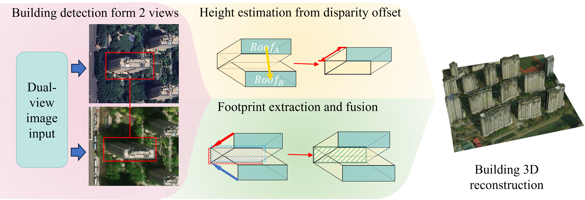

DualRecon: Building 3D Reconstruction from Dual-View Re-mote Sensing Images
Data

Large-scale and rapid 3D reconstruction of urban areas holds significant
practical value. Recently, methods that reconstruct buildings from off-nadir
imagery have gained attention for their po-tential to meet the demand for
large-scale, time-sensitive reconstruction applications. These methods
typically estimate the building height and footprint position by extracting
building roof and the roof-to-footprint offset within a single off-nadir
image. However, the reconstruction ac-curacy of these methods is primarily
constrained by two issues: first, errors in the single-view building
detection, and second, the inaccurate extraction of offsets, which is often
a consequence of these detection errors as well as interference from shadow
occlusion. To address these chal-lenge, we propose DualRecon, a method for
3D building reconstruction from heterogeneous dual-view remote sensing
imagery. In contrast to single-image detection methods, DualRecon achieves
more accurate 3D information extraction for reconstruction by fusing and
correlating building information across different views. This success can be
attributed to three key ad-vantages of DualRecon. First, DualRecon fuses the
two input views and extracts building objects based on the fused image
features, thereby improving the accuracy of building detection and
localization. Second, compared to the roof-to-footprint offset, the
disparity offset of the same rooftop between different views is less
affected by interference from shadows and occlusions. Our method leverages
this disparity offset to determine building height, which enhances the
accuracy of height estimation. Third, we designed DualRecon with a
three-branch architecture to be op-timally tailored for the dual-view 3D
information extraction task. Third, we designed DualRecon with a
three-branch architecture to be optimally tailored for the dual-view 3D
information ex-traction task. Moreover, this paper introduces
BuildingDual—the first large-scale dual-view 3D building reconstruction
dataset. It comprises 3,789 image pairs containing 288,787 building
in-stances, where each instance is annotated with its respective roofs in
both views, roof-to-footprint offset, footprint, and the disparity offset of
the roof. Experiments on this dataset demonstrate that DualRecon achieves
more accurate reconstruction results than existing methods when perform-ing
3D building reconstruction from dual-view remote sensing imagery.